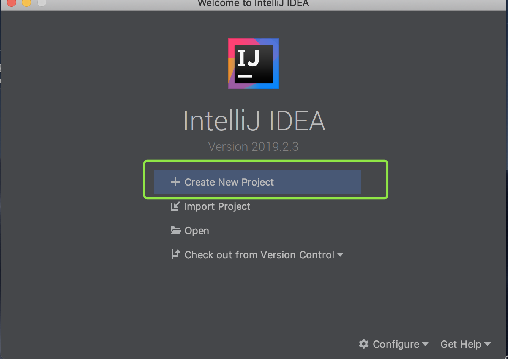
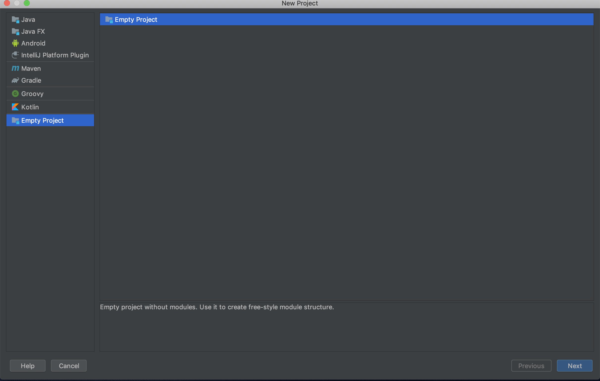
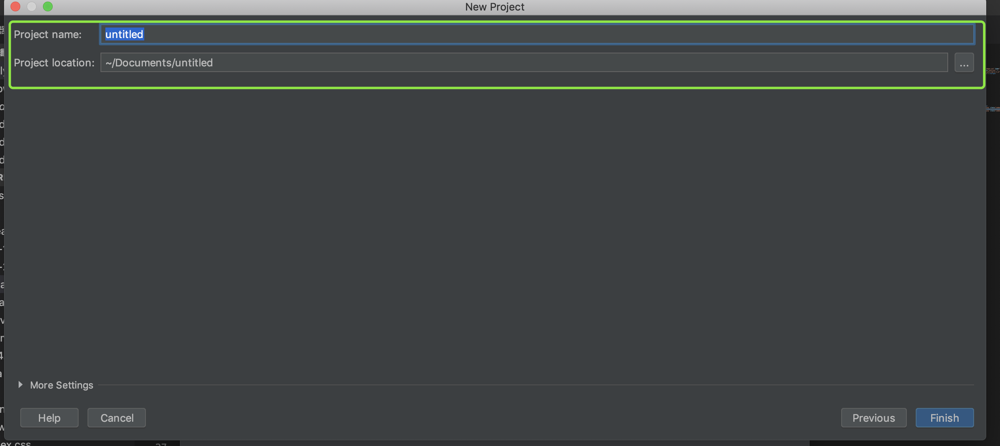
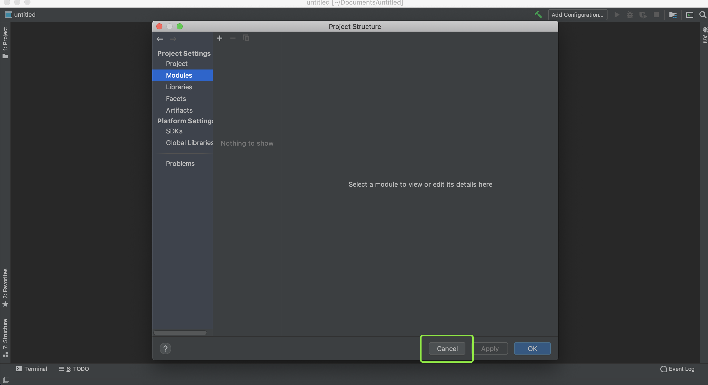
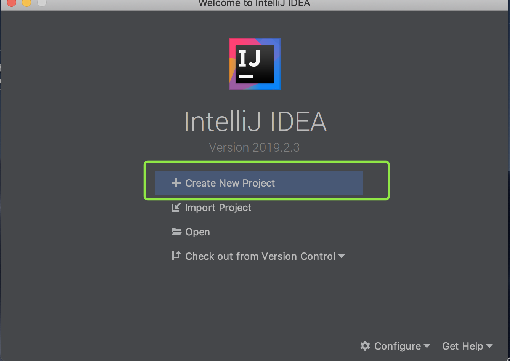
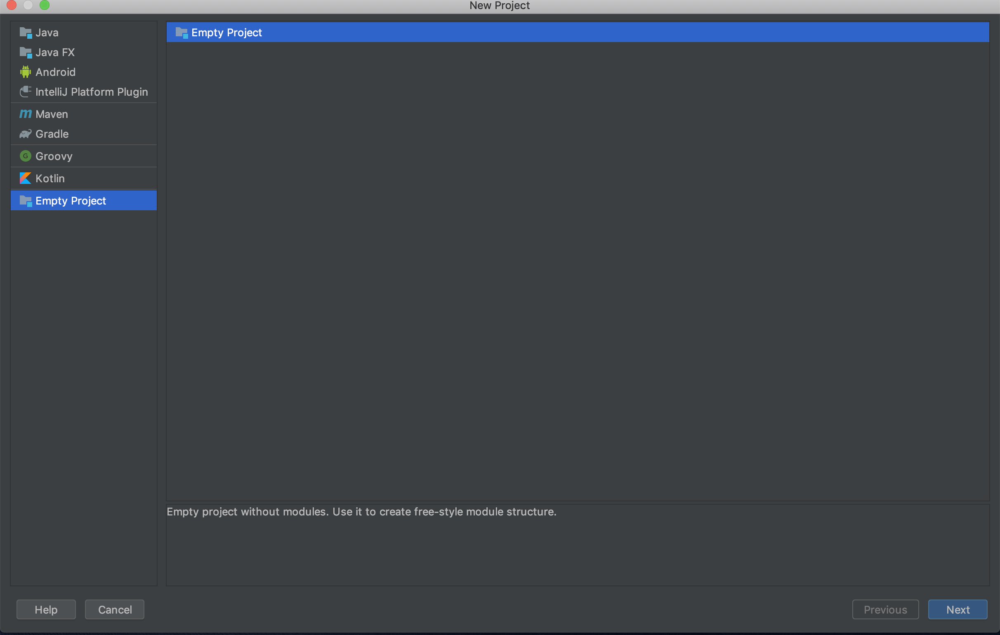
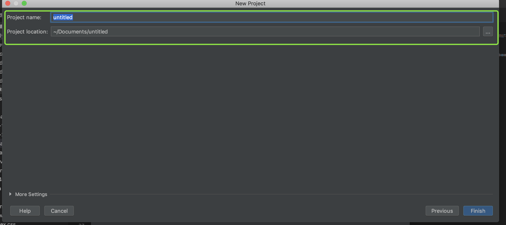
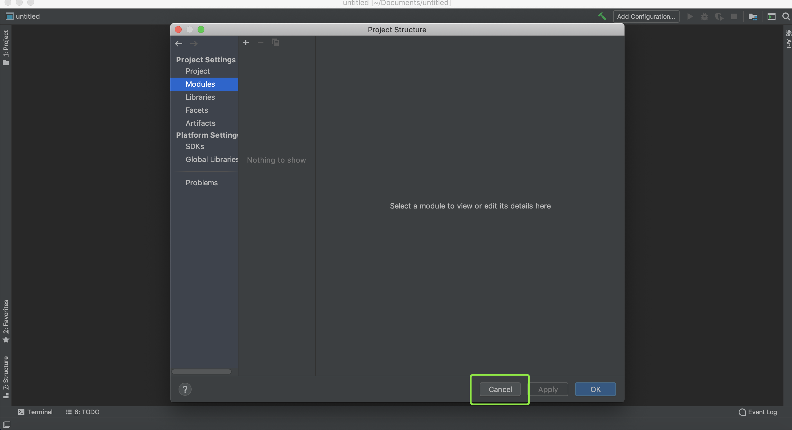

创建项目
打开Idea 选择 Create New Project
我们要创建一个springBoot项目,需要安装插件，所以我们先创建一个空项目,点击 【next】
输入我们的项目名称，和选择项目存放位置 点击【finish】
我们先不用管这些，点击 【cancel】
打开Idea 选择 Create New Project
我们要创建一个springBoot项目,需要安装插件，所以我们先创建一个空项目,点击 【next】
输入我们的项目名称，和选择项目存放位置 点击【finish】
我们先不用管这些，点击 【cancel】
